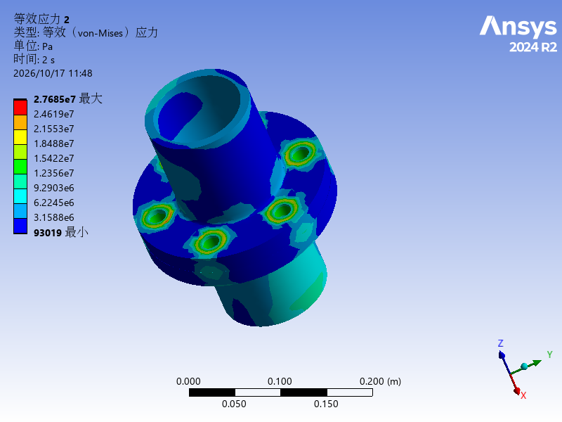

建模与前处理
实体、梁与壳的选择；几何清理、截面与偏置、接触面和网格控制。
查看对应案例 →MECHANICAL & STRUCTURAL SIMULATION
从几何简化、接触与网格，到求解、验证与工程解释。真实模型、原生结果和可追溯的复现过程，构成这份持续完善的 CAE 作品集。

2024 R2 本机重算 / 原生结果图
01 / CASE LIBRARY
每个案例说明分析方向、建模依据、操作过程和验证边界。
课程来源与本人复现工作分别记录。
02 / CAPABILITY & EVIDENCE
实体、梁与壳的选择；几何清理、截面与偏置、接触面和网格控制。
查看对应案例 →载荷路径、边界条件、摩擦接触、螺栓预紧和局部应力解释。
查看对应案例 →求解器日志、结果状态、单位与作用范围；保存失败记录及修复依据。
查看真实排错记录 →Workbench脚本、Mechanical参数导出、原生云图与逐案例操作档案。
查看岗位与案例参考 →按13节课程原顺序归档：课程讲到什么，就记录什么；分析方向仅用于查找，不改变课程内容。
03 / REPRODUCIBLE ENGINEERING
每一步记录操作对象、菜单路径、参数及来源、预期现象、保存点和检查方法。补录的演示会注明时间，保留原始执行记录。
查看全过程记录标准 ↗